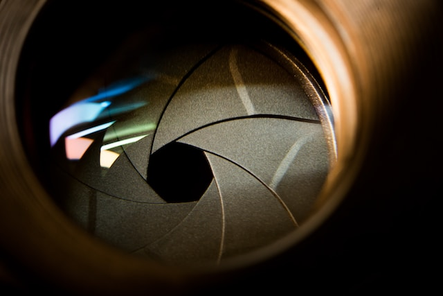
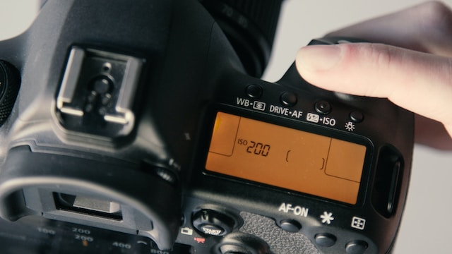

Breathtaking header about photography
Photography is one of the best hobby I ever explore. And something about photos, cameras and lenses. ISO is too high.
Triangle of exposition
-

Shutter speed - determines how long the lens stays open for, letting the specific amount of volume of light into the sensor determined by the aperture.
-

Aperture - Like the iris of your eye, the aperture blades on the lens of a camera control how much light is let into the camera lens.
-

ISO - is the international standard of measurement that determines how sensitive a photographic film emulsion or digital sensor is to light.
Something smart and important about art and photography, something like art is everywhere around you.
— McLavin
That is your time to take great photo!
Sign up for more details and newsletter!